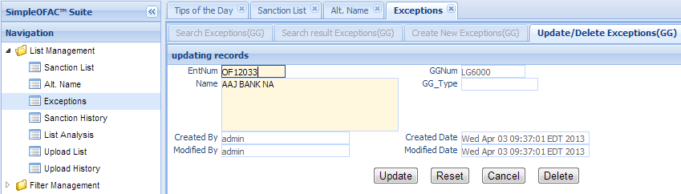
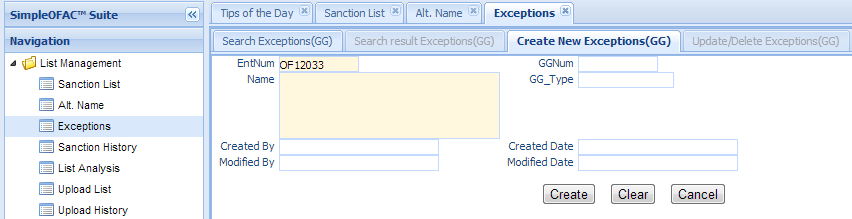

The Screening Engine scans the customer data or payment transaction against the sanction list and produces alert or no alert results. Some alerts are true alerts while others are false alerts.
There are some entries in the sanction list which produces large volume of false alerts. Exceptions, also called Good Guys, are used to eliminate those false alerts.
Each Sanction List entry can have 0 to many exceptions. If the customer name matches the sanction list name at the same time that the customer name also matches the exception name, the filter engine will ignore the alert and produce a no alert result.
For example, “John” is the name of a sanction list entry. So “John Smith” and “ED John” will get alerts on this entry. If we add “John Smith” and “Ed John” as exceptions to this list, the filter will ignore the alerts on “John Smith” and “ED John” and produce no alert result. Please note that the customer name must completely match the exception name in order to ignore the alert on this entry.
Like Alt. Name, Exceptions must link to a sanction list entry.This function is used to manage those Exceptions, or Good Guys. Click the Exception in the left navigation menu under List management and a new Exception Tab folder will be created in the right panel.
There are 3 sub-Tab folders: Search Exception(Good Guy), Search Result Exception(Good Guy) and Create New Exceptions(Good Guys).
Note
Exceptions must link to a Sanction List list entry.
Search Criteria
| Field Name | Description |
|---|---|
| entNum | Link to sanction list entry unique record identifier. |
| GGNum | Exception unique record identifier. |
| Name | Name of Exceptions. |
| GG Type | Type of Exceptions. |
| CreatedByDate | Date and Time when this entry is created |
| CreatedByUser | User who create this entry. |
| ModifiedByDate | Last modified date and time. |
| ModifiedByUser | Last modified user. |
| AND | Select AND radio box if you want those criteria add together. |
| OR | Select OR radio box if you want to get the result if either criteria meet |
The top part is the table which shows the list of the Exceptions(Good Guys) that meet the search criteria. The bottom part is the details of the selected entry.
Double Click the selected record in the table to modify this entry. A new Tab folder Update/Delete Alt. Name will be added, as show below.
Select the “Create New Exception(GG)” Tab to create a new entry.
| Field Name | Description |
|---|---|
| entNum | Link to sanction list entry unique record identifier. |
| GGNum | Exception unique record identifier; This is a read only field. |
| Name | Name of Exceptions; This is a mandatory field. |
| GG Type | Type of Exceptions. |
| CreatedByDate | Date and Time when the entry is created. It is a read only field. |
| CreatedByUser | User who create this entry. It is a read only field. |
| ModifiedByDate | Last modified date and time; It is a read only field. |
| ModifiedByUser | Last modified user; It is a read only field. |